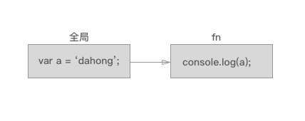
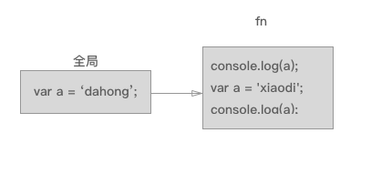
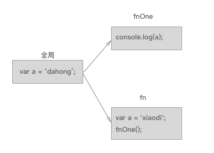

作用域
在弄懂作用域之前我们需要知道一个词-预解析
js 代码执行是从左到右从上到下逐句进行的，在这个过程前被调用到的作用域会来一次预解析，预解析操作会将该作用域中 var 声明的变量进行变量名提升，并且对函数声明进行函数体提升，函数在 js 中是一等公民，所以优先提升，已经被提升的变量名不会再被提升
console.log(a); //undefined
var a = 'dahong';
console.log(a); //dahong
console.log(b); //ƒ b() { console.log('b') }
function b() {
console.log('b')
}
var b = 'xiaodi';
console.log(b); //xiaodi
等同于
var b = function () {
console.log('b')
}
var a;
console.log(a); //undefined
a = 'dahong';
console.log(a); //dahong
console.log(b); //ƒ b() { console.log('b') }
b = 'xiaodi';
console.log(b); //xiaodi
作用域与之相关的是环境，环境也叫做上下文，也是 js 这门语言的一个基础，比如有人问你今天的天气怎么样，你看了看回答是晴天，第二天有人问你今天的天气怎么样，你同样看了看回答说是雨天，为什么会有两种不同答案呢，明明是同一个人的回答呀，那是因为环境发生了变化
js 中有全局和局部两种作用域
- 作用域中声明的变量可以被所有的子作用域访问
- 局部作用域只能通过函数，或者 let 和 const 在块中生成
- 就近原则，会先从离它最近的作用域开始层层向上，找到了就停下，不然一直寻找到全局，如果没找到，报错（ XXX is not defined ）
好，根据这几个定义我们来逐步画图分析
例子1：
var a = 'dahong';
function fn () {
console.log(a);
}
fn()

我们可以清晰的看到图上有两个作用域，全局和 fn 作用域，这时候 fn 调用，要去找到 a 的值，根据定义3的就近原则，离它最近的作用域是 fn ,找了一圈没找到，开始往上找（全局），全局找到了那就不找了，心满意足在控制台输出了 dahong
例子2：
var a = 'dahong';
function fn () {
console.log(a);
var a = 'xiaodi';
console.log(a);
}
fn()

我们可以看到图上有两个作用域，全局和 fn 作用域，这时候 fn 调用，第一次去找 a 的值，离它最近的作用域是 fn ,找了一圈找到了，a 的值是 undefined ，心满意足在控制台输出了 undefined，然后开始给 a 赋值，第二次去找 a 的值，找了一圈找到了，a 的值是 xiaodi， 心满意足在控制台输出了 xiaodi
例子3：
var a = 'dahong';
function fnOne () {
console.log(a);
}
function fn () {
var a = 'xiaodi';
fnOne();
}
fn()

我们可以看到图上有三个作用域，全局、 fn 和 fnOne 作用域，这时候 fn 调用，紧接着 fnOne 调用，去找 a 的值，离它最近的作用域是 fnOne ,找了一圈没找到，开始往上找（全局），全局找到了那就不找了，心满意足在控制台输出了 dahong